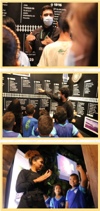

Sobre o Museu
Visitação
Agendar visita
Visitação em 3D
Notícias
Agendamento de Visitas

Qual é o tipo de visita?
Visita Normal
Visita Institucional
Questionário de Visita Institucional
Visita pelo museu até 10 alunos por vez, ideal para instituições de ensino.
Nome da Instituição de Ensino:
Responsável (Diretor(a)/Coordenador Pedagógico):
Telefone da Escola:
Endereço da Escola:
Data:
Horário:
Selecione:
09:00
09:30
10:00
10:30
11:00
11:30
12:00
12:30
13:00
13:30
14:00
14:30
15:00
15:30
16:00
Quantidade de Alunos:
Enviar
×